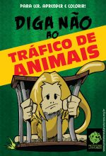
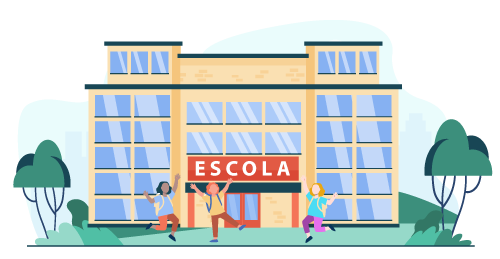

Nosso Projetos em escolas
Projeto de Educação Ambiental criado em 2004, realizado em escolas do ensino fundamental e médio, com o objetivo de desenvolver ações criativas e gerar conscientização sobre a necessidade de proteção e preservação do meio ambiente, buscando desta forma sanar a falta de informação sobre os principais problemas ambientais e criando Agentes Multiplicadores, que se tornarão adultos mais conscientes e comprometidos quanto à redução dos impactos causados ao meio ambiente pelas ações dos seres humanos. Para que nosso objetivo tivesse o sucesso esperado, elaboramos materiais didáticos (cartilhas, jogos, peças teatrais…), que ajudam a envolver o aluno de forma lúdica e divertida, porém, com muito conteúdo e objetividade. Como a maioria das escolas públicas trata o assunto “meio ambiente” de forma transversal (sem possuírem materiais específicos para realizar suas atividades), capacitamos também os professores para interagir com os alunos.
Uma equipe multidiciplinar desenvolve os títulos,sempre preocupada com a didática para o melhor Aproveitamento

Protetores da Natureza
A cada dia, o mundo enfrenta novos desafios ambientais que colocam em risco nossa casa comum: o planeta Terra. Desde de 2004, o Projeto de Educação Ambiental vem transformando essa realidade, formando jovens agentes de mudança em escolas de ensino fundamental e mnédio. Ao despertar a consciência ambiental de nossas crianças e adolescentes, estamos plantando as sementes para um futuro mais sustentáveis e responsável. Mas, para que essa transformação continue, precisamos da sua ajuda. Imagine quantas crianças ainda podem ser inspiradas, quantos jovens podem aprender a cuidar do meio ambiente e multiplicar esse conhecimento em suas comunidades. Com uma doação, você se torna um Protetor da Natureza,apoinando a produção de materiais didáticos, capacitação de professores e o desenvolvimento de atividades que fazem toda a diferença para as próximas gerações. Junte-se a nós missão de proteger o meio ambiente e garantir um futuro melhor para todos. Com seu apoio, juntos formaremos uma geração de adultos conscientes e comprometidos com a preservação do nosso planeta. Doe agora e seja um Protetor da Natureza
Alguns de nossos números

+ de 2.5 milhões
de cartilhas distribuídas em escolas, faculdades e eventos+ de 580 mil
alunos participantes de projetos

+ de 2 mil
escolas atendidas em 4 estadosPROJETOS QUE INSPIRAM UMA RELAÇÃO COM A NATUREZA

O Programa de Educação Ambiental que está mudando a atitude de nossos jovens frente às questões ambientais e que certamente irá ajudar a equilibrar e melhorar a nossa sobrevivência neste planeta!
Projeto de Educação Ambiental realizado desde 2002, com o objetivo de despertar a consciência acerca da importância da preservação do Meio Ambiente como manutenção da sobrevivência dos seres humanos, fornecendo ferramentas pedagógicas inovadoras para os professores e alunos tratarem dos temas de forma lúdica e divertida.
É uma ação de cidadania praticada por voluntários de todas as idades e classes sociais, que realizam a catação de lixo em ruas, praças, parques e praias, entre outros locais. Durante a atividade uma parte da equipe realiza a distribuição de materiais educativos sobre os impactos causados ao meio ambiente pelos diferentes resíduos descartados.
O projeto é voltado para alunos dos Fundamentais I e II, com a parceira da PMSP e aprovado pelo CMDCA - Conselho Mun. Direitos da Criança e do Adolescente da Pref de SP, patrocinado pelo FUMCAD – Fundo Mun. dos Direitos da Criança e do Adolescente

Com este projeto, podemos dar às pessoas (em especial às crianças) uma nova chance de redescobrir a importância das plantas, das ervas e das árvores para a sua sobrevivência, atribuindo a estes recursos o seu merecido valor.